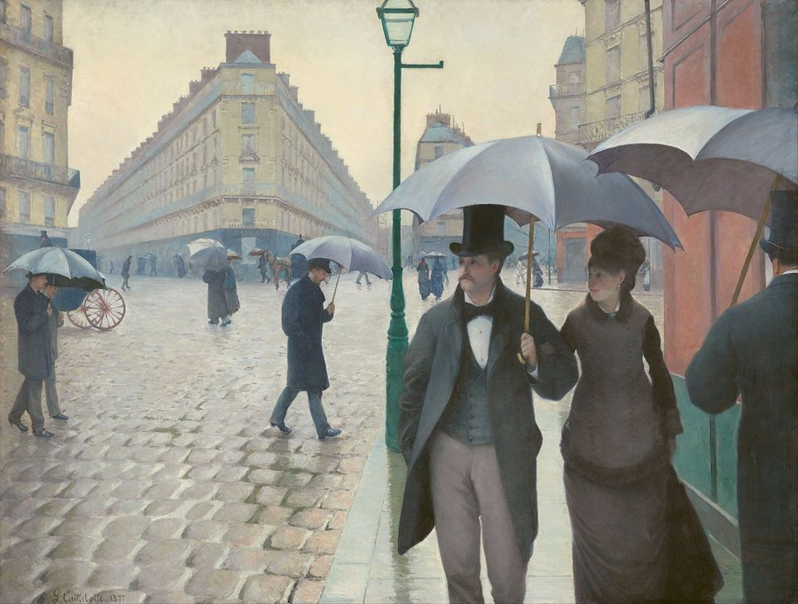
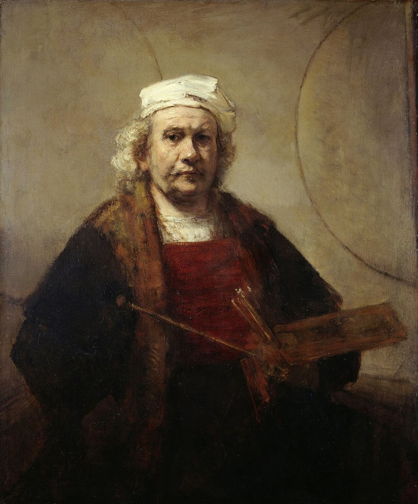
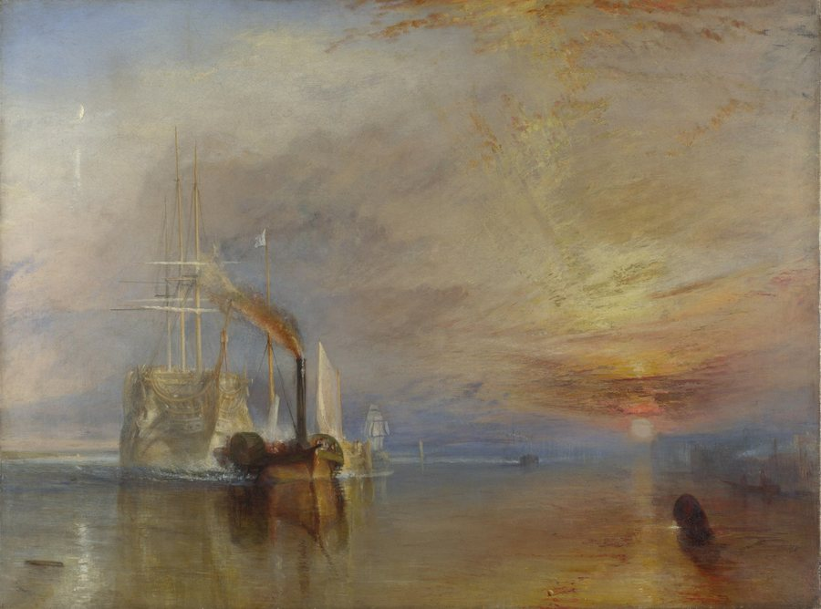

English · Workplace Vocabulary Quiz
25 short sections for SEGPA and CFA, in simple English.
See the sequenceSection
Séquences d'anglais et de français pour les niveaux 6e à 3e, y compris SEGPA.
25 short sections for SEGPA and CFA, in simple English.
See the sequenceFive very simple English dialogues between a worker and a visitor. Clear language, and jobs presented with respect. Each video has a student sheet and an answer key, in pdf, docx and odt.
See the sequence
Ruby Bridges goes to a new school in 1960. Norman Rockwell's painting, colours and clothes, a short story in the past, feelings and a postcard to Ruby. Four short lessons, a dys version, a printable worksheet and a Happy Families card game.
See the sequenceNorman Rockwell, The Problem We All Live With, 1963, Norman Rockwell Museum, Stockbridge. © Norman Rockwell Family Agency.
A full year of English in cinquième, LVA A2 / LVB A1+, with simple units on life in the UK.
See the sequenceFacebook announcement
Du monde entier au cœur du monde : Gautier, Rimbaud, Richepin et Sindbad. Six leçons, versions élève, prof, dys et élève absent.
Voir le supportClaude Gellée, dit le Lorrain, Port de mer au soleil couchant, 1639, musée du Louvre, Paris. Domaine public.
GEREX sequences to support learners from 6e to 3e, in simple language.
See the sequenceFacebook announcementLes ressources de français réunies par examen : brevet (DNB), CAP, bac professionnel, bac de français à l’écrit et à l’oral.
Voir le supportEnglish exams in one place: DNB (brevet), CAP and CAPA, Bac pro, and the general and technological pathway (LVA, LVB, LLCER, AMC, Grand Oral), with the Gorse spiral.
See the sequence
La 4e comme année tournant : les cinq questionnements du programme, cours complets, traces écrites, travail à la maison, langue, oral, exposés, évaluations et grilles, et des premiers pas vers la 3e.
Voir le supportMarie Bashkirtseff, Un meeting, 1884. Huile sur toile, musée d'Orsay, Paris. Domaine public.

Parcours de français pour la troisième : dictée, rédaction, réécriture et oral, pour préparer le DNB 2026.
Voir le supportRembrandt, Autoportrait aux deux cercles, vers 1665-1669. Huile sur toile, Kenwood House, Londres. Domaine public.

A full year of English in quatrième, taught step by step.
See the sequenceThomas Moran, The Grand Canyon of the Yellowstone, 1872. Oil on canvas. Smithsonian American Art Museum, Washington. Public domain.

A full year of English in troisième, with DNB preparation through continuous classroom assessment.
See the sequenceJ. M. W. Turner, The Fighting Temeraire tugged to her last berth to be broken up, 1839. Oil on canvas. National Gallery, London. Public domain.

Panneau dédié au DNB 2026 : dictée, rédaction, réécriture, oral.
Voir le supportJean Siméon Chardin, Un philosophe occupé de sa lecture (Portrait du peintre Joseph Aved), 1734. Musée du Louvre, Paris. Domaine public.